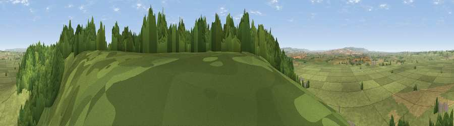

Viewpoint near High Ham
#13457 in England · top 38% of its area beats it · near High HamThe view, rendered

A 360° render of this exact spot computed from the terrain model, tree cover and land cover — summer colours, afternoon light, calibrated against photographs of famous viewpoints. Real trees, hedges and buildings will differ in detail.
The panorama
Grey silhouette: terrain skyline in each direction (720 bearings, Earth curvature and refraction included). Dashed green: skyline with trees (+15 m) and buildings (+8 m) as obstacles. Blue strip: how far the ground is visible on each bearing.
Where the view opens
Wedge length = distance to the farthest visible ground on that bearing (vegetation-aware). Rings at 10, 25 and 50 km.
What fills the view
67% grassland · 24% woodland · 7% cropland · 2% built-up
Angular shares of the visible panorama (visual magnitude), not map area. Landscape diversity 0.39 (0–1 Shannon).
Key numbers
More beautiful places nearby
The staircase of upgrades: each row has a higher view potential than everything closer. Driving times are estimates from straight-line distance, calibrated against real road routing — check an actual route before setting out.
| Place | Direction | Drive | Score |
|---|---|---|---|
| Viewpoint near Aller | SSW · 0 km | ~1 min | 63.3 |
| Viewpoint near Aller | SW · 1 km | ~2 min | 64.2 |
| Lollover Hill | ENE · 7 km | ~14 min | 66.4 |
| Socombe Hill | NNW · 7 km | ~15 min | 76.4 |
| Viewpoint near Buckland St. Mary | SW · 20 km | ~34 min | 77.3 |
| Viewpoint near Enmore | WNW · 20 km | ~34 min | 77.6 |
| Viewpoint near Hewish | S · 21 km | ~35 min | 78.5 |
| Cothelstone Hill | W · 22 km | ~36 min | 82.1 |
51.07549, -2.84462 · source: screening · position refined by local search. Computed location — check access rights before visiting.